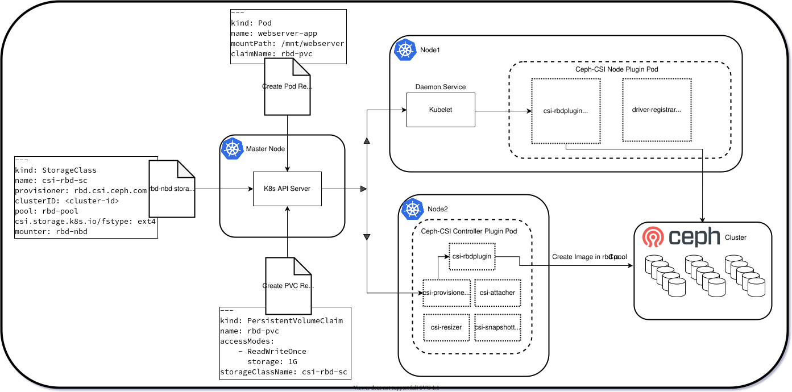
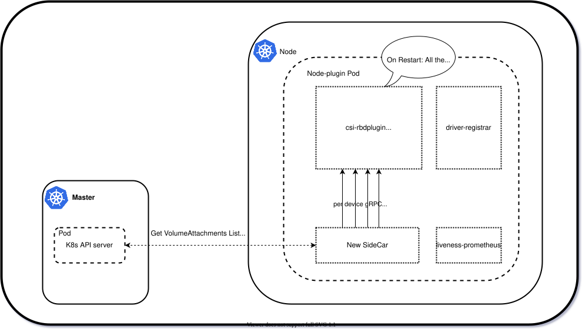

RBD NBD VOLUME HEALER¶
- RBD NBD VOLUME HEALER
- Rbd Nbd
- Advantages of userspace mounters
- Side effects of userspace mounters
- Volume Healer
- More thoughts
Rbd nbd¶
The rbd CSI plugin will provision new rbd images and attach and mount those to workloads. Currently, the default mounter is krbd, which uses the kernel rbd driver to mount the rbd images onto the application pod. Here on at Ceph-CSI we will also have a userspace way of mounting the rbd images, via rbd-nbd.
Rbd-nbd is a client for RADOS block device (rbd) images like the existing rbd kernel module. It will map an rbd image to an nbd (Network Block Device) device, allowing access to it as a regular local block device.

It’s worth making a note that the rbd-nbd processes will run on the client-side,
which is inside the csi-rbdplugin node plugin.
Advantages of userspace mounters¶
- It is easier to add features to rbd-nbd as it is released regularly with Ceph, and more difficult and time consuming to add features to the kernel rbd module as that is part of the Linux kernel release schedule.
- Container upgrades will be independent of the host node, which means if there are any new features with rbd-nbd, we don’t have to reboot the node as the changes will be shipped inside the container.
- Because the container upgrades are host node independent, we will be a better citizen in K8s by switching to the userspace model.
- Unlike krbd, rbd-nbd uses librbd user-space library that gets most of the development focus, and hence rbd-nbd will be feature-rich.
- Being entirely kernel space impacts fault-tolerance as any kernel panic affects a whole node not only a single pod that is using rbd storage. Thanks to the rbd-nbd’s userspace design, we are less bothered here, the krbd is a complete kernel and vendor-specific driver which needs changes on every feature basis, on the other hand, rbd-nbd depends on NBD generic driver, while all the vendor-specific logic sits in the userspace. It's worth taking note that NBD generic driver is mostly unchanged much from years and consider it to be much stable. Also given NBD is a generic driver there will be many eyes on it compared to the rbd driver.
Side effects of userspace mounters¶
Since the rbd-nbd processes run per volume map on the client side i.e. inside
the csi-rbdplugin node plugin, a restart of the node plugin will terminate all
the rbd-nbd processes, and there is no way to restore these processes back to
life currently, which could lead to IO errors on all the application pods.

This is where the Volume healer could help.
Volume healer¶
Volume healer runs on the start of rbd node plugin and runs within the node plugin driver context.
Volume healer does the below,
- Get the Volume attachment list for the current node where it is running
- Filter the volume attachments list through matching driver name and status attached
- For each volume attachment get the respective PV information and check the criteria of PV Bound, mounter type
- Build the StagingPath where rbd images PVC is mounted, based on the KUBELET path and PV object
- Construct the NodeStageVolume() request and send Request to CSI Driver.
- The NodeStageVolume() has a way to identify calls received from the healer and when executed from the healer context, it just runs in the minimal required form, where it fetches the previously mapped device to the image, and the respective secrets and finally ensures to bringup the respective process back to life. Thus enabling IO to continue.
More thoughts¶
- Currently the NodeStageVolume() call is safeguarded by the global Ceph-CSI level lock (per volID) that needs to be acquired before doing any of the NodeStage, NodeUnstage, NodePublish, NodeUnPublish operations. Hence none of the operations happen in parallel.
- Any issues if the NodeUnstage is issued by kubelet?
- This can not be a problem as we take a lock at the Ceph-CSI level
- If the NodeUnstage success, Ceph-CSI will return StagingPath not found error, we can then skip
- If the NodeUnstage fails with an operation already going on, in the next NodeUnstage the volume gets unmounted
- What if the PVC is deleted?
- If the PVC is deleted, the volume attachment list might already get
refreshed and entry will be skipped/deleted at the healer.
- For any reason, If the request bails out with Error NotFound, skip the PVC, assuming it might have deleted or the NodeUnstage might have already happened.
- The Volume healer currently works with rbd-nbd, but the design can accommodate other userspace mounters (may be ceph-fuse).